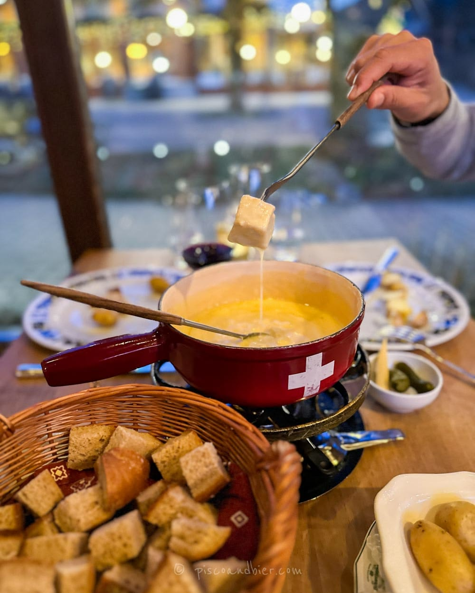
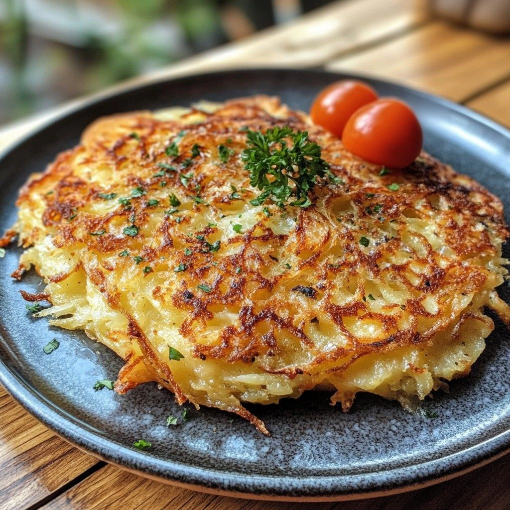

La gastronomía suiza es famosa en todo el mundo por sus deliciosos chocolates, quesos y platos tradicionales. La comida en Suiza mezcla sabores franceses, alemanes e italianos, creando recetas únicas y muy reconocidas internacionalmente. Cada región del país tiene platos especiales preparados con ingredientes frescos y naturales.
Suiza es considerada uno de los países con mejor calidad en chocolates y quesos. Muchas personas visitan este país para probar sus comidas tradicionales y descubrir nuevos sabores. Además, los platos suizos suelen prepararse con ingredientes naturales y recetas antiguas.
La comida suiza es muy variada. Existen platos calientes ideales para el invierno, postres deliciosos y comidas típicas que representan la cultura del país. La gastronomía forma una parte importante de la vida cotidiana en Suiza.

La fondue es uno de los platos más famosos de Suiza. Consiste en queso derretido servido caliente donde las personas mojan pan usando largos tenedores especiales.
El chocolate suizo es reconocido mundialmente por su calidad y sabor. En Suiza existen muchas fábricas y tiendas dedicadas a producir chocolates artesanales.

El Rösti es un plato tradicional preparado con papas ralladas y fritas hasta quedar crujientes. Es una comida muy popular en diferentes regiones de Suiza.